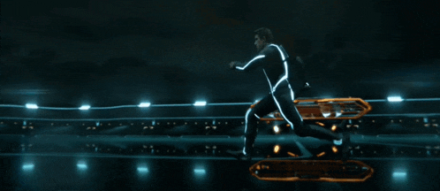
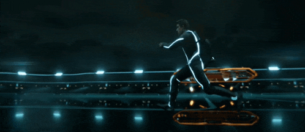
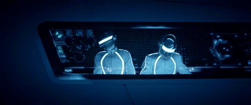

A Cultural Impact
The original Tron movie was known to be one of the first major motion films to use an extensively amount of CGI in a live action movie. Sadly it didn't win any awards in that field, but soon after it would be considered as the first step to many great movies that use CGI. In other words, we wouldn't have Avatar or Marvel movies if it wasn't for the Grid.
 

The film's impact on electronic music and neon-noir aesthetics can still be seen in modern design. For many, the "Grid" became a metaphor for the potential of the human mind inside a digital space.
"The Grid. A digital frontier. I tried to picture clusters of information as they moved through the computer. What did they look like? Ships? Motorcycles?"
- Kevin Flynn
My Digital Frontier
To me, this movie represents more than just cool visuals. It represents my LIFE. If it wasn't for Tron: Legacy, I wouldn't be here right now.
Seeing the world through the lens of a User has pushed me to start creating my own games. I no longer want to play video games, I want to build them from the ground up and bring them to life.
Follow Madd In Games